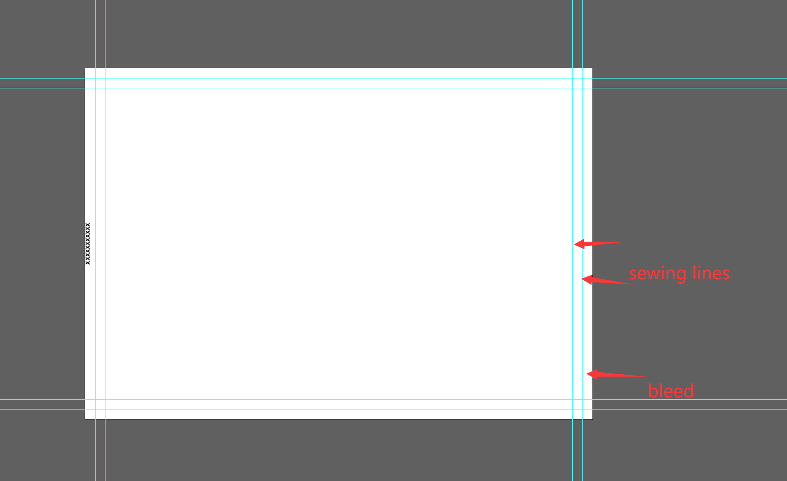

Why does the flag look like this?
The image is slightly taller and wider than the flag you'll actually receive, and the
checkered squares around the edge run right off the side. Both are deliberate.
A printed flag isn't cut to size — its edges are folded over and sewn into a hem,
which permanently swallows a strip of the artwork all the way around. Print shops
account for this with a template like the one below:

Bleed
The outermost strip. It gets folded under and sewn down, so it never appears on the
finished flag.
Sewing lines
Where the stitching actually runs. Exactly how much lands inside versus outside
varies a little from flag to flag.
Safe area
Everything inside the inner line. This is what you're guaranteed to see.
So the file is generated at the full size the printer needs, with your certificate and a
complete checkered border sitting inside the safe area, and the outermost squares
stretched outward to fill the bleed. Whatever the hem takes is sacrificial
checkerboard — the certificate and the full pattern survive intact.
The proportions matter too: printers scale artwork to fit their template and quietly
crop whatever overhangs. This image is generated at their exact ratio, so nothing gets
trimmed on the way in.
Got it